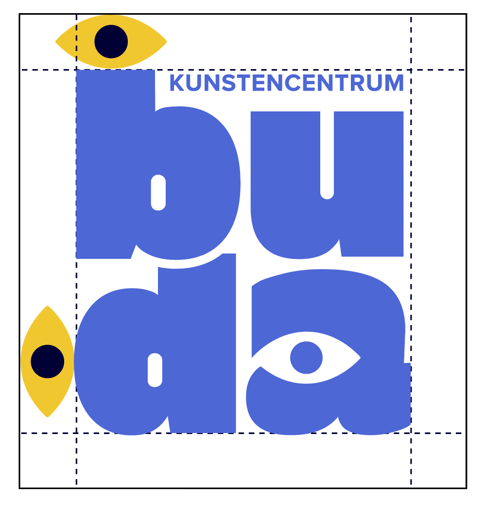
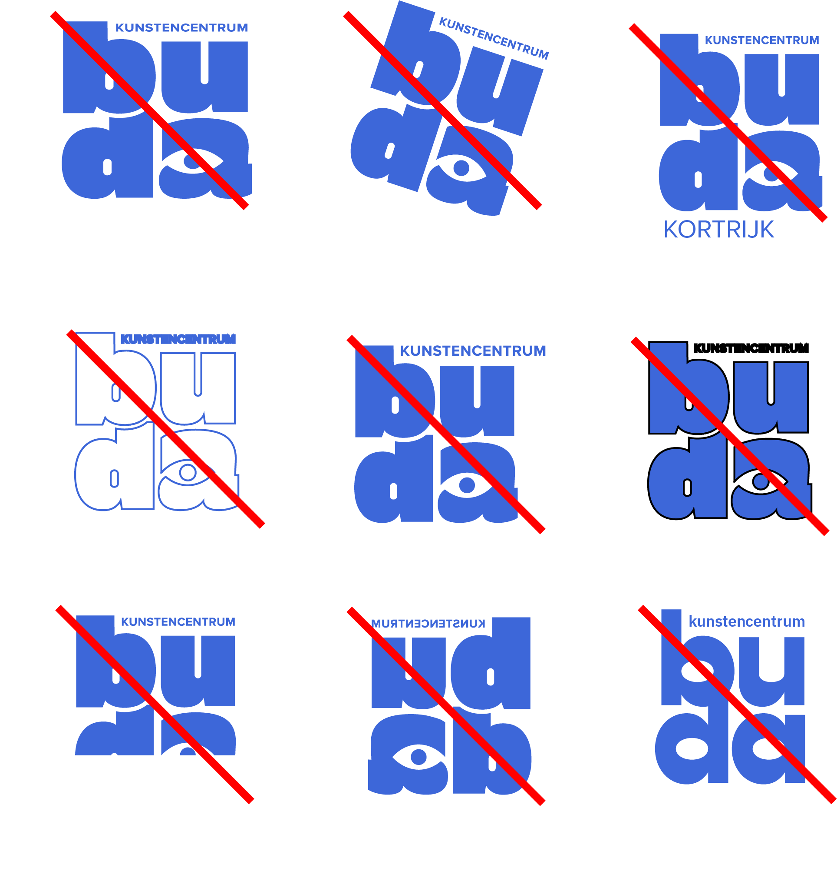

logo positief
Waar mogelijk is het aangewezen om steeds het hoofdlogo, dus de blauwe, vierkante variant te gebruiken. Om de leesbaarheid te verhogen, mag deze op een effen gekleurd vierkant geplaatst worden.
{kind=link}
logo: animatie
Er is een animatie van het logo. Te gebruiken waar mogelijk, maar vooral bedoeld vooraleer de film begint in de filmzalen.
{kind=link}
{kind=link}
logo zwart-wit
Het logo mag in uitzonderlijke gevallen ook in zwart-wit gebruikt worden. Dit is echter enkel aan te raden als een kleurenprint onmogelijk is.
logo: kleurvariaties
Bij toepassingen van de branding, is het mogelijk om het logo te gebruiken in de verschillende kleuren van de huisstijl. Dit geldt echter enkel voor interne toepassingen. Externe partners gebruiken best het blauwe, grijze of zwart-witte logo.
logo: plaatsingsvariaties
Bij toepassingen van de branding, is het mogelijk om het logo te gebruiken in verschillende posities. Dit geldt echter enkel voor interne toepassingen. Externe partners gebruiken best het vierkante logo. Deze variaties bestaan ook in de verschillende kleurvariaties.
logo: uitzonderlijke gevallen
Voor uitzonderlijke gevallen waar het logo te klein staat om het woord 'kunstencentrum' duidelijk te lezen, zijn er een horizontale versie en een vierkante versie beschikbaar die het woord groter zetten. Daarnaast is het ook mogelijk om 'kunstencentrum' weg te laten.
vrije ruimte
Het minimum aan ruimte rond het logo dat vrij moet blijven van typografie of andere grafische elementen is een keer de hoogte van het oogje uit de 'a' van het logo. Deze ruimte schaalt dus mee met de grootte van het logo.

minimale grootte
Het logo kan proportioneel geschaald worden. Om de leesbaarheid te
behouden, is het belangrijk dat je het logo maximaal verkleind tot de hier opgegeven
waarden.
Minimale hoogte print: 15 mm.
Minimale hoogte web: 70 px.
Voor de mobiele website wordt het horizontale logo met grote tekst gebruikt. Bij deze versie
is de minimumhoogte 35px.
omgang met het logo
Hieronder vind je een lijst met zaken die je zeker niet mag doen met het logo.
1. Wijzig het logo nooit in de breedte of de hoogte.
2. Roteer het logo niet.
3. Plaats geen extra elementen/tekst bij het logo.
4. Zet het logo nooit in outlines.
5. Schaal de elementen nooit onafhankelijk van elkaar.
6. Geef het logo nooit een extra contour.
7. Snijdt het logo nooit bij.
8. Spiegel het logo niet.
9. Verander nooit de gebruikte lettertypes in het logo.
10. Kortom: breng zelf geen wijzigingen aan.
